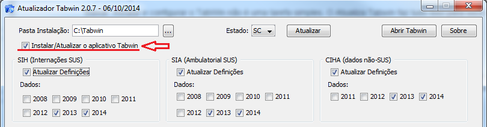
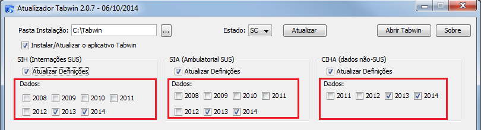
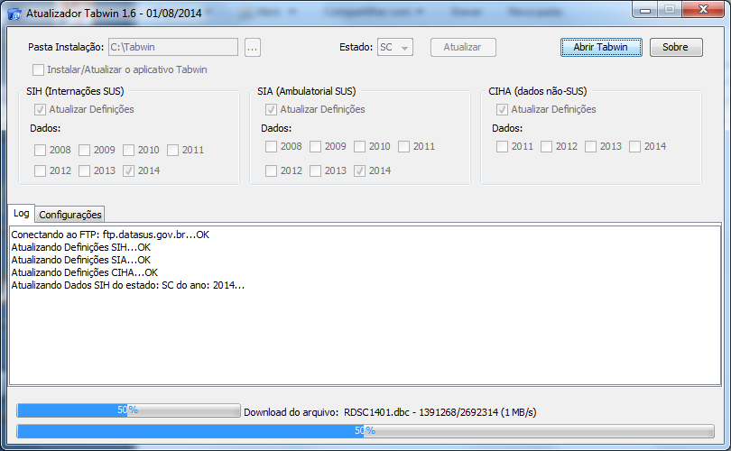

Mais informações
Instalação
Baixar, instalar e configurar o TabWin não é uma tarefa simples. O Atualiza Tabwin faz tudo isso para você de forma automática, rápida e simples, mantendo a última versão sempre atualizada e o TabWin pronto para o uso.
Marcando a opção Instalar/Atualizar o aplicativo Tabwin, o Atualiza Tabwin deixara sempre a última versão do aplicativo instalada no seu computador.
Atualização
Para manter o TabWin atualizado é necessário fazer download de diversos arquivos que encontram-se em vários locais e sites diferentes. O Atualiza TabWin seleciona e baixa esses arquivos automaticamente, em tela única, configurando o arquivo de definição com o caminho correto para os seus arquivos de dados.
Atualmente o Atualiza Tabwin prepara as definições para tabular as informações de saúde dos seguintes sistemas do SUS:
- SIHSUS - Sistema de Informações Hospitalares do SUS ( Arquivos RD - Reduzida de AIH )
- SIASUS - Sistema de Informações Ambulatoriais do SUS ( Arquivos PA - Produção Ambulorial )
- CIHA - Sistema de Comunicação de Informação Hospitalar e Ambulatorial ( Arquivos CIHA )
Marcando as opções conforme a tela abaixo, ele sempre deixará estas definições atualizadas e configuradas para utilizar o caminho correto dos arquivos de dados.

Arquivos de dados
Para realizar as tabulações no TabWin, são necessários arquivos de dados no formato ".dbc". Estes arquivos encontram-se em vários locais e sites diferentes, separados por estado, ano e mês. O Atualiza TabWin seleciona e baixa apenas os novos dados disponibilizados, organizando-os em pastas para facilitar as tabulações.
Marcando as opções conforme a tela abaixo, o Atualiza Tabwin baixará os arquivos de cada sistema do SUS, por ano e, o melhor, fará o download dos arquivos somente se os mesmos forem atualizados pelo Datasus. Desta forma, basta deixar todos os anos marcados e o aplicativo fará somente o download de novos arquivos ou dos arquivos que foram atualizados.
Tela principal do Atualiza Tabwin
É visualizado o progresso individual do download de cada arquivo, contendo uma tela de log para acompanhar o andamento da atualização.
